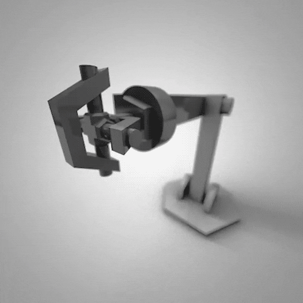

Portfolio
Projects
Machine Learning
Robotics
Machine Vision
About
Tools
Resources
Nishant’s Resources
Modern Robotics
Robot Modelling and Control
Python for Data Science
Contact
LinkedIn
GitHub
Stack Overflow
Gmail
Curriculum Vitae
Projects
Home
Projects
Robotics
Inverse Kinematics
Trajectory Optimization
Dynamics
Control
RRT
Machine Learning
Probability
Regression
Clustering
Classification
Anamoly
Machine Vision
Smoke Detection
About Me
Tools
Git
Quarto
Resources
My Resources
Modern Robotics
Robot Modelling and Control
Python for Data Science
Categories
All
(3)
Projects
Machine Learning

Robotics
Machine Vision
No matching items
Back to top